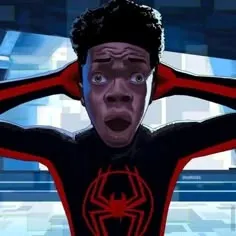

Nombre real: Peter Benjamin Parker
Alias: El Hombre Araña / El Amigable Vecino
Base de operaciones: Queens / Nueva York
Afiliación: Vengadores, Daily Bugle
Peter Parker, un estudiante huérfano de Queens criado por sus tíos Ben y May Parker, adquirió habilidades sobrehumanas tras ser mordido por una araña radiactiva en una exhibición científica. Inicialmente intentó usar sus nuevos poderes de agilidad, fuerza proporcional y sentido arácnido para obtener dinero y fama. Sin embargo, su egoísmo indirectamente provocó la muerte de su tío Ben a manos de un ladrón que Peter no quiso detener. Esta tragedia le enseñó una lección fundamental: "Un gran poder conlleva una gran responsabilidad".
Desde ese día, adopta la identidad de Spider-Man para proteger Nueva York de villanos letales como el Duende Verde, el Doctor Octopus y Venom. Diseñó sus propios lanzatelarañas mecánicos y un traje icónico, equilibrando su vida como héroe con sus luchas cotidianas como estudiante, fotógrafo del periódico Daily Bugle e integrándose eventualmente a los Vengadores frente a amenazas de escala mundial.